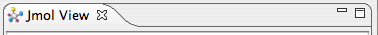
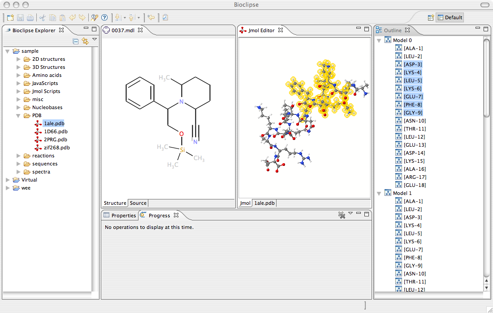

Customizing the Workbench
It is easy to get the Bioclipse workbench customized the way you like it.
Customizing views
Views can be moved around by dragging the view titlebar and positioning it on a new location.
By clicking the sides/borders of a View and drag, you can increase the size of individual Views.
Doubleclick the views title bar to maximize it, and doubleclick it once more to restore the original
sice and location.
To close a view, click the cross in the title bar.

Fig: The titlebar of a View
Customizing editors
Editors are very similar to Views when it comes to customization, with the exception that they
cannot be moved around and placed on different places as freely as Views.
What you can do is to have multiple editors next to each otehr in the central part of Bioclipse,
called the EditorPart. Drag the Editor's titlebar to the side of the aeditorpart
and release it for this effect.
